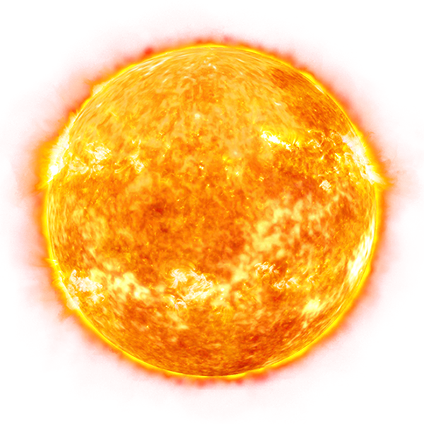
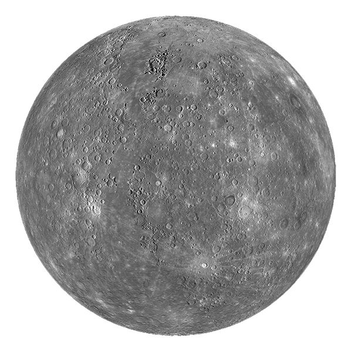
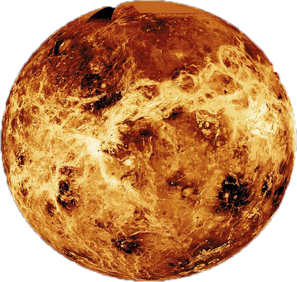
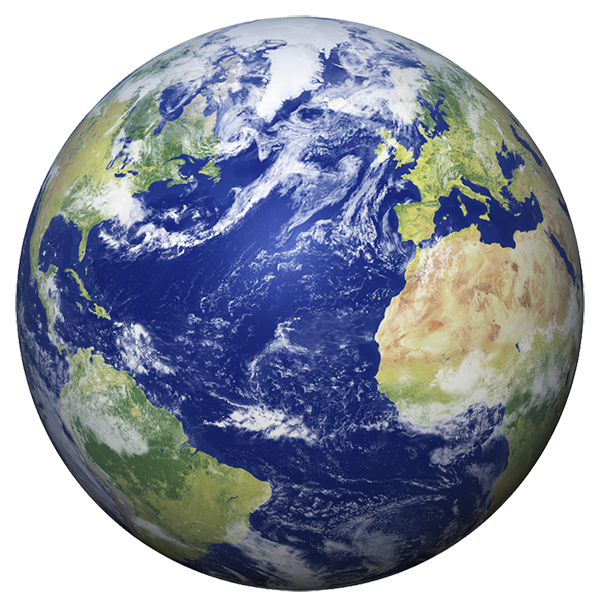
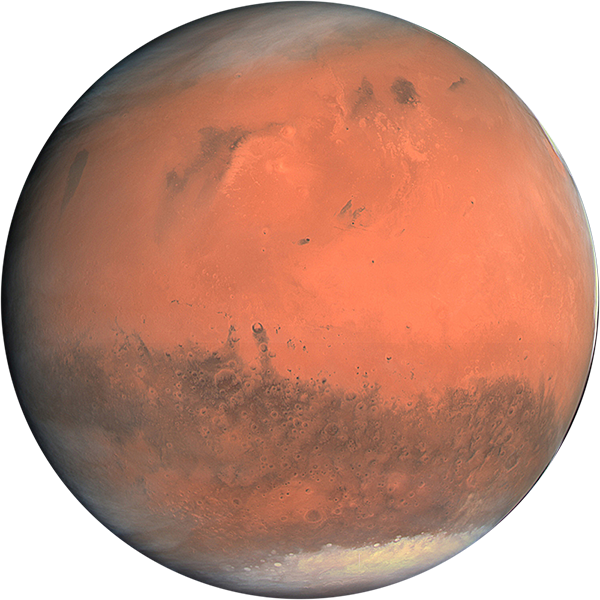
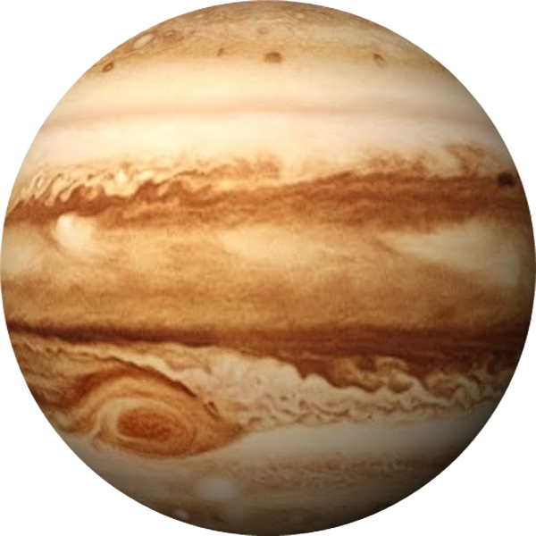
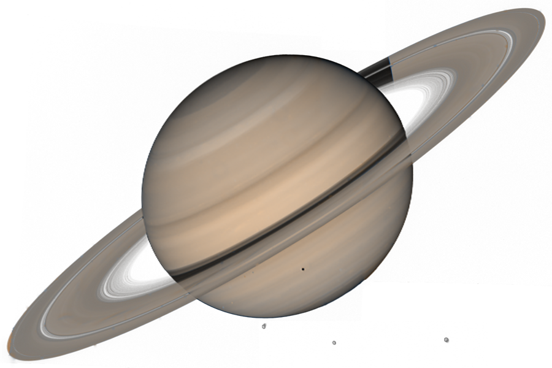
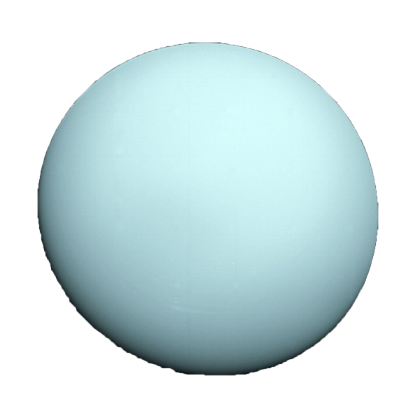
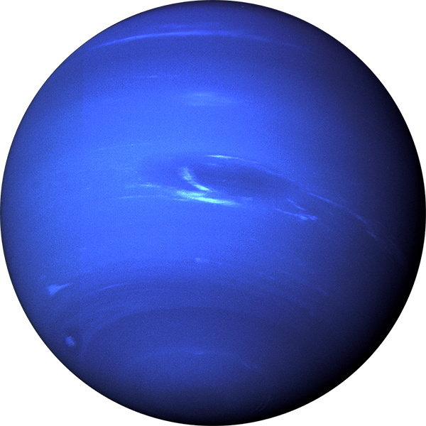

Галактики — чрезвычайно далёкие астрономические объекты. Расстояние до ближайших из них измеряют в мегапарсеках, а до далёких — в единицах красного смещения z . Самой удалённой из известных по состоянию на декабрь 2012 года является галактика UDFj-39546284. Разглядеть на небе невооружённым глазом можно всего лишь три галактики: галактика Андромеды (видна в северном полушарии) и Большое и Малое Магеллановы Облака (видны в южном; являются спутниками нашей Галактики).
Со́лнечная систе́ма — планетная система, включающая в себя центральную звезду — Солнце — и все естественные космические объекты, обращающиеся вокруг Солнца. Она сформировалась путём гравитационного сжатия газопылевого облака примерно 4,57 млрд лет назад.
Звезды - массивный газовый шар, излучающий свет и удерживаемый в состоянии равновесия силами собственной гравитации и внутренним давлением, в недрах которого происходят (или происходили ранее) реакции термоядерного синтеза. ... Ближайшей к Солнцу звездой является Проксима Центавра.
Со́лнце — единственная звезда Солнечной системы. Вокруг Солнца обращаются другие объекты этой системы: планеты и их спутники, карликовые планеты и их спутники, астероиды, метеороиды, кометы и космическая пыль
Мерку́рий — ближайшая к Солнцу планета Солнечной системы. Планета названа в честь древнеримского бога торговли — быстрого Меркурия, поскольку она движется по небесной сфере быстрее других планет
Вене́ра — вторая планета Солнечной системы. Названа в честь древнеримской богини любви Венеры.
Земля́ — третья от Солнца планета. Пятая по размеру среди всех планет Солнечной системы. Она является также крупнейшей по диаметру, массе и плотности среди планет земной группы. Иногда упоминается как Мир, Голубая планета, иногда Терра.
Марс — четвёртая по удалённости от Солнца и седьмая по размерам планета Солнечной системы; масса планеты составляет 10,7 % массы Земли. Названа в честь Марса — древнеримского бога войны, соответствующего древнегреческому Аресу
Юпи́тер — пятая планета от Солнца, крупнейшая в Солнечной системе. Наряду с Сатурном, Ураном и Нептуном Юпитер классифицируется как газовый гигант.
Сату́рн — шестая планета от Солнца и вторая по размерам планета в Солнечной системе после Юпитера. Сатурн, а также Юпитер, Уран и Нептун, классифицируются как газовые гиганты. Сатурн назван в честь римского бога земледелия. Символ Сатурна — серп.
Ура́н — планета Солнечной системы, седьмая по удалённости от Солнца, третья по диаметру и четвёртая по массе. Была открыта в 1781 году английским астрономом Уильямом Гершелем и названа в честь греческого бога неба Урана
Непту́н — восьмая планета Солнечной системы. Нептун также является четвёртой по диаметру и третьей по массе планетой. Масса Нептуна в 17,2 раза, а диаметр экватора в 3,9 раза больше земных. Планета была названа в честь римского бога морей.
Когда Плутон разжаловали из планет, правилом хорошего тона стало знание, что в Солнечной системе всего восемь планет. Правда, при этом же, ввели новую категорию небесных тел - карликовые планеты. Это “недопланеты”, которые имеют округлую (или близкую к ней) форму, не являются ничьими спутниками, но, при этом не могут очистить собственную орбиту от менее массивных конкурентов. Сегодня считается, что таких планет пять: Церера, Плутон, Ханумеа, Эрида и Макемаке. Ближайшая к нам - Церера. Через год мы узнаем о ней намного больше чем сейчас, благодаря зонду Dawn. Пока знаем только, что она покрыта льдом и с двух точек на поверхности у нее испаряется вода со скоростью 6 литров в секунду. О Плутоне тоже узнаем в следующем году, благодаря станции New Horizons. Вообще, как 2014 год в космонавтике станет годом комет, 2015 год обещает стать годом карликовых планет. Остальные карликовые планеты находятся за Плутоном, и какие-либо подробности о них мы узнаем не скоро. Буквально на днях нашли еще одного кандидата, правда официально его в список карликовых планет не включили, так же как и его соседку Седну. Но не исключено, что найдут еще, несколько более крупных карликов, поэтому число планет в Солнечной системе еще вырастет.
Это, наверно, самый поразительный факт о космосе, который я узнал не так давно. Условия на Венере настолько отличаются от всего, что мы могли бы вообразить, что венериане спокойно могли бы летать в земной ад, чтобы отдохнуть в мягком климате и комфортных условиях. Поэтому, как бы ни казалась фантастической фраза “свинцовый снег”, для Венеры - это реальность. Благодаря радару американского зонда Magellan вначале 90-х, ученые обнаружили на вершинах венерианских гор некое покрытие, обладающее высокой отражающей способностью в радиодиапазоне. Поначалу предполагалось несколько версий: последствие эрозии, отложение железосодержащих материалов и т.п. Позже, после нескольких экспериментов на Земле, пришли к выводу, что это самый натуральный металлический снег, состоящий из сульфидов висмута и свинца. В газообразном состоянии они выбрасываются в атмосферу планеты во время извержений вулканов. Затем термодинамические условия на высоте 2600 м способствуют конденсации соединений и выпадению на возвышенностях.
Черная дыра – самый яркий объект во всей Вселенной. Внутри черной дыры сила гравитации настолько велика, что из неё невозможно вырваться даже свету. По логике вещей, дыра должна быть не заметна на небе вовсе. Однако, во время вращения дыры кроме космических тел поглощают еще и газовые облака, которые и начинают светиться, закручиваясь по спирали. Так же метеоры, попадая в черные дыры, загораются от неимоверно резкого и быстрого движения.
Ученые помогли разрешить загадку, связанную с составом вещества, лежащего под поверхностью Нептуна – самой далекой планеты нашей планетной системы. Новое исследование проливает свет на химический состав вещества этой планеты, которая лежит на расстоя...
В 1887 г. американский астроном Льюис Свифт открыл яркое облако, или туманность, которая в действительности оказалась небольшой галактикой, находящейся на расстоянии примерно 2,2 миллиарда световых лет от Земли. Сегодня она известна как галактика «со...
В госкорпорации Роскосмос сообщили, что российские космонавты – Александр Мисуркин и Антон Шкаплеров (дублер), входящие в состав экипажа транспортного пилотируемого космического корабля «Союз МС-06», запуск которого к Международной космической станци...
Еще вчера, 11 августа со стартовой площадки самого крупного космодрома в Японии – «Танэгасима» (Tanegashima Space Center) должен был состояться старт тяжелой ракеты-носителя H-IIA со спутником «Митибики-3» на борту. Запуск планировался в рамках проек...
За последнее деfсятилетие вне нашей Солнечной системы астрономами было обнаружено несколько тысяч планет. Невероятное множество из них были очень схожи в своих размерах с размерами нашей планеты, а из остальной части планеты представляли собой аналоги..
По данным официального информационного агентства правительства КНР - «Синьхуа», с первого в мире космического спутника «Мо-цзы», предназначенного для квантовой передачи данных, на Земле китайскими специалистами была успешно получена первая зашифрован...
© 2015 Company Name. All rights reserved